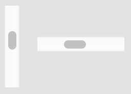
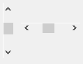

Scroll Bar
The scroll bar control is a rectangle that contains a sliding scroll box and has direction arrows at both ends. Besides the scroll box and the direction arrows, a scroll bar has one more active part: the so called gray area (the two rectangles between the scroll box and the arrows). The user can modify the current position of the scroll box by clicking the mouse on the direction arrows or anywhere in the gray area or by tracking the scroll box. A click on the direction arrows modifies the control value by 1, while a click in the gray area modifies it by a page (see Remarks). On Windows, scroll bars can have the keyboard focus. When a scroll bar is focused, its scroll box is blinking and the user can modify the control value by pressing the Home, End, PageUp, PageDown and arrow keys.
A scroll bar has a range and a current position. The range represents the minimum and maximum position values for the control. Because these values are expressed as short integers, the highest possible range and current position value is SHRT_MAX. The control itself uses the range and the current value to determine the pixel position of the scroll box.
There are two basic types of scroll bars: the horizontal and vertical ones. When you create a scroll bar, DG automatically determines its orientation according to the specified horizontal and vertical sizes. If the horizontal size is greater than the vertical one DG creates a horizontal scroll bar. In the opposite case DG creates a vertical scroll bar.
Scroll bars should be typically attached to user items whose contents extend beyond their border. A horizontal scroll bar enables the user to scroll the content of the user item to the left or right. A vertical scroll bar enables the user to scroll the content up or down. Moreover, a scroll bar can be positioned anywhere in a dialog and used whenever needed to provide an analog representation of the current position. In this situation, however, using a slider bar is a better alternative than using a scroll bar.
Note that some controls in DG (edit control, list box, list view and tree view) have built-in scroll bars that are parts of the controls and handled internally by DG. These scroll bars are usually disabled, but they become active if the controls are not large enough to display all of their content. You should not attach separate scroll bars to the controls mentioned above.
-
 
Item type
- DG_ITM_SCROLLBAR
Subtypes
-
Subtype Meaning DG_SB_NORMAL Normal scroll bar. DG_SB_PROPORTIONAL The scroll box size changes automatically, when the page size is changed.
Flags
-
Value Meaning DG_SB_NONFOCUSABLE If it is set, the scroll bar item will not get the keyboard focus. DG_SB_NOAUTOSCROLL If it is set, the scroll bar handles only the DG_TSM_THUMBTRACK sub-message, the other sub-messages should be handled by the dialog callback function, so the application is responsible to move the scroll box according to the event. If it is not set, the sub-message is DG_TSM_TRACKING always, and the scroll box will move automatically.
GRC Specification
ScrollBar x y dx dy pageSize min max [styleFlag]
where x and y are the pixel coordinates of the upper left corner of the scroll bar, dx and dy are the width and height of the control in pixels. pageSize defines the page size of the scroll bar (see Remarks for details). min and max specifies the initial range of the scroll bar. The optional styleFlag parameter can be any OR(|) combination of the proportional, focusable and autoscroll flags.
Possible values of the proportional flag:
-
Value Meaning Normal Normal scroll bar. Not proportional. Proportional Proportional scroll bar. The scroll box size changes automatically, when the page size is changed.
Possible values of the focusable flag:
-
Value Meaning Focusable The scroll bar can have the keyboard focus. NonFocusable The scroll bar cannot have the keyboard focus.
Possible values of the autoscroll flag:
-
Value Meaning AutoScroll The scroll bar handles the scroll bar specific events itself, the dialog callback function is notified just about the beginning, finishing, and during tracking. NoAutoScroll The scroll bar handles only the DG_TSM_THUMBTRACK sub-message, the other sub-messages should be handled by the dialog callback function, so the application is responsible to move the scroll box according to the event.
Messages
-
Message Meaning DG_MSG_CHANGE The position of the scroll box is changed. The message data parameter contains the previous position. DG_MSG_TRACK The position of the scroll box is changed during tracking. The message data parameter is the sub-message.
Modification Flag
DGSetItemValLong, DGSetItemMinLong and DGSetItemMaxLong functions can set the scroll bar's modification flag except if they are called when handling the DG_MSG_INIT message in the dialog callback function. The flag can also be set by user actions that generate DG_MSG_CHANGE or DG_MSG_TRACK messages. Use DGModified or DGResetModified to retrieve or reset (clear) the state of the modification flag.
Remarks
The range of a scroll bar can be specified not only in GRC. You can dynamically alter the range by using the DGSetItemMinLong and DGSetItemMaxLong functions. The possible minimum of the range is zero while the maximum is SHRT_MAX. Use DGGetItemMinLong and DGGetItemMaxLong to retrieve the range of a scroll bar. The current value can be set and retrieved by DGSetItemValLong and DGGetItemValLong, respectively.
If either of the range or value setting functions is called, DG checks the consistency of data (i.e. whether the minimum <= value <= maximum condition is true or not). If data are inconsistent, DG automatically adjusts them. For the details of this adjustment see DGSetItemValLong, DGSetItemMinLong and DGSetItemMaxLong.
The position of the scroll box is derived from the current value based on the minimum and maximum value. The relative position is calculated using the following formula: relative position = (value - minimum) / (maximum - minimum). On Windows, if minimum and maximum values are equal, the scroll box is placed at the beginning of the control. However, on Macintosh, the scroll bar becomes disabled in this case.
If the user clicks and tracks the scroll box, or clicks and holds down the (left) mouse button on one of the arrows or in the gray area of the control, or presses and holds down one of the direction keys when the scroll bar has the keyboard focus, DG sends DG_MSG_TRACK messages to the dialog callback function until the user releases the (left) mouse button or the pressed key. With DG_MSG_TRACK message, a sub-message will be delivered also, which specifies the scroll bar event more detailed. This allows the application to modify other controls during tracking. When handling DG_MSG_TRACK messages call DGGetItemValLong to retrieve the current value of the scroll bar. As soon as tracking is finished the callback function receives a DG_MSG_CHANGE message; the message data parameter is the scroll box position before tracking. Note that every DG_MSG_CHANGE message is preceded by at least one DG_MSG_TRACK message.
When the user clicks in the gray area of a scroll bar, or on Windows presses the PageUp or PageDown keys while the scroll bar has the keyboard focus, the scroll box position is modified by the value of the page size. The page size is initialized from GRC.
If you want to set the page size to a particular value use DGScrollBarSetPageSize. To retrieve the current page size use DGScrollBarGetPageSize.
Requirements
- Version: DG 2.0.0 or later
- Header: DG.h
See Also
Dialog item types, Edit Control, List Box, List View, Slider Bar, Tree View, User Item
DGGetItemMaxLong, DGGetItemMinLong, DGGetItemValLong, DGModified, DGResetModified, DGSetItemMaxLong, DGSetItemMinLong, DGSetItemValLong, DGScrollBarGetPageSize, DGScrollBarSetPageSize, Callback functions
DG_MSG_CHANGE, DG_MSG_INIT, DG_MSG_TRACK